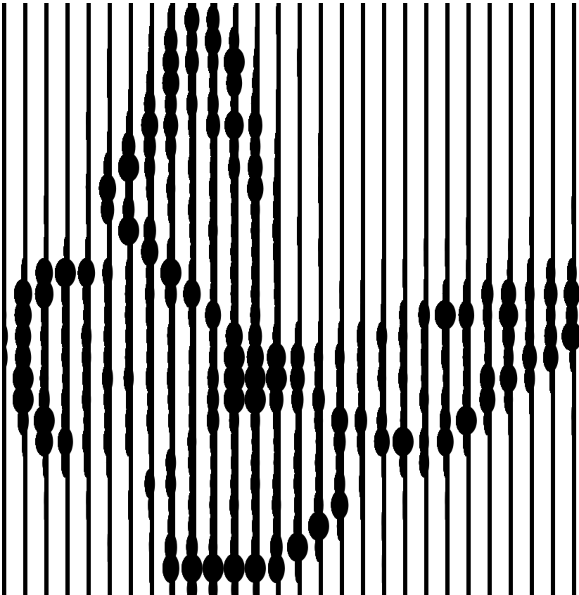
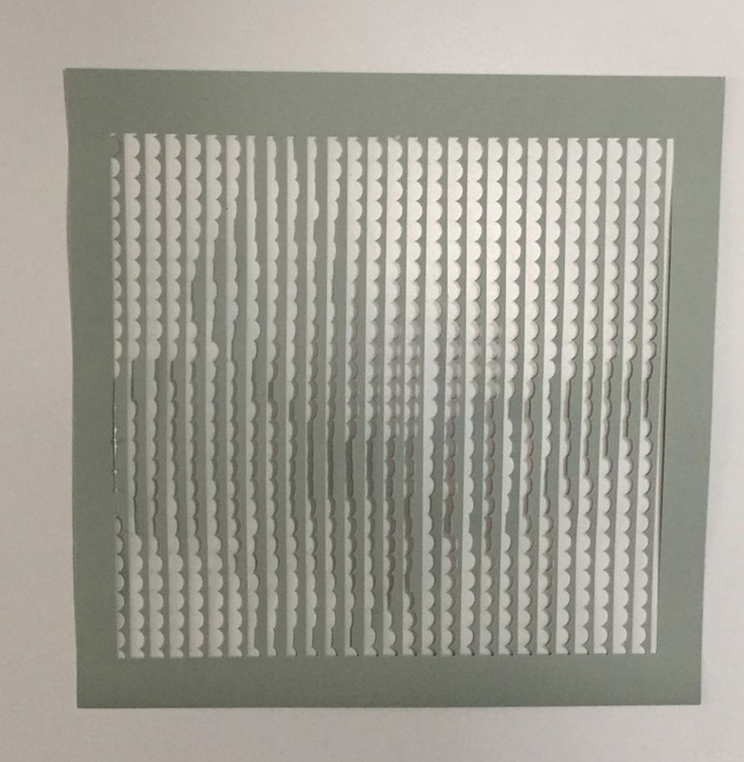
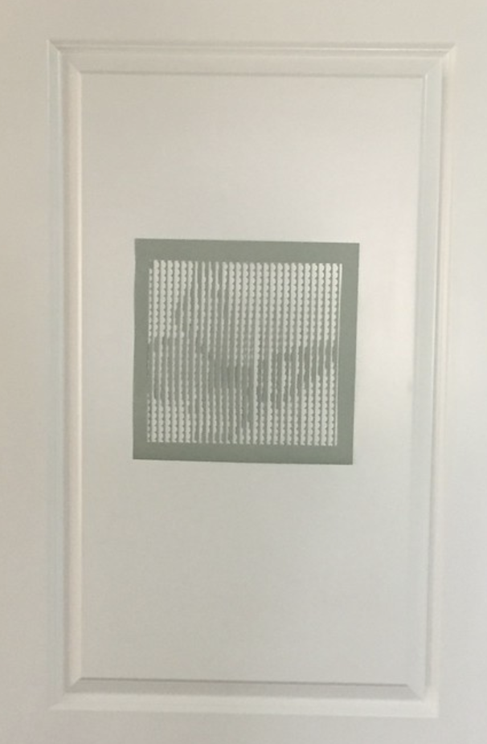
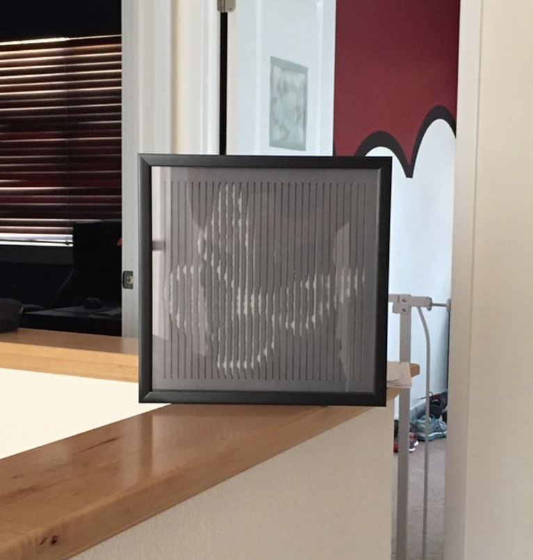

negative Space Pictures
- Sometimes the Medium is the art.
-- Me
Introduction
While On the JOCO cruise, the boat had some interesting wall liners, where up close they just looked like wavy sticks on the wall, but as you pulled back, and image appeared. I decided to try to replicate that, but instead of using wood (this time), I'd cut the shapes out in paper:

The program
I used paper.js due to a lack of finding anything better that can do simple boolean math on shapes; even paper.js was lacking, as every boolean operation seems to create all sorts of new paths, and the final result needs to be cleaned up in illustrator.To create the final result, I took an image and shrunk it down pretty small (50x50), and then for each pixel I would create a semi-circle with the size of the circle being based on the greyscale value of the original image. I then took all these shapes and used boolean unites and subtractions to merge them into one path (per row).

Once I got this, I exported it to svg (via paper.js), opened it in Illustrator, cleaned up all the paths, and then saved that as a DXF file (that's what the Cameo uses). From there, I just opened the dxf on the Cameo software, and cut out the image.
The software has an option to invert the whitespace; depending on how you want the negative space to show up: here is version1 of the white space:


and then inverting the whitespace you get:

Source
The source can be found on gitpublish
javascript
boolean
art